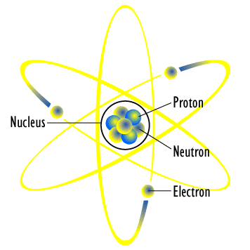
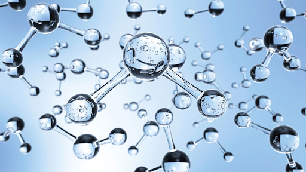
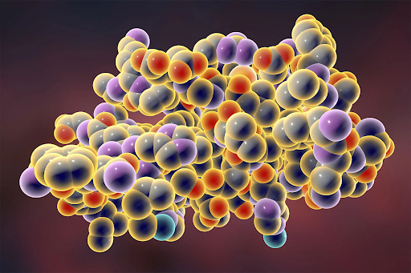
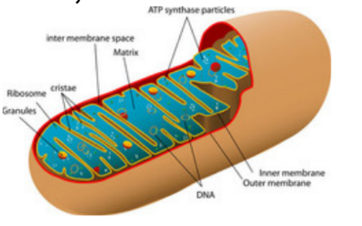
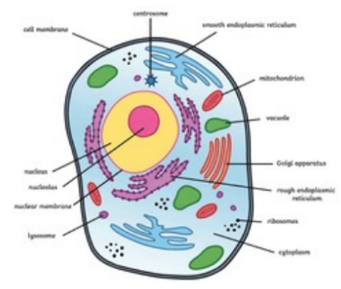

| Levels | Description and Detail | Image | Example | Size |
|---|---|---|---|---|
| Atom |
|
 | An atom of the element Carbon (C) |
100s of picometers (10-12 meters, TINY!) or 0.1 - 0.5 nanometers |
| Molecule |
|
 | Two hydrogen atoms and one oxygen atom form a water molecule (H2O) |
a few angstroms (Å) |
| Macromolecule |
|
 | Dna, Lipids |
100 -10,000 angstroms (Å) |
| Organelle |
|
 | Chloroplasts, Mitochondria |
1-10 micrometers (µm) |
| Cell |
|
 | Protozoa (amoeba, paramecium), specialized cells (muscle cells, blood cells) |
1 - 100 micrometers (µm) |